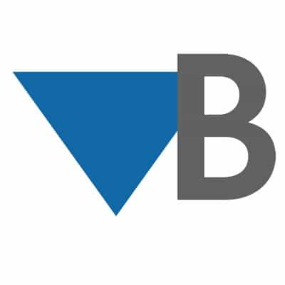

Project Engineer
Baseline Engineering Consultants
Denver, CO
to Present

As part of the Baseline team, I am responsible for the design and modeling of water treatment, reclamation facilities, lift stations, and master plans. As a project engineer, my responsibilities also include writing reports, client meetings, site visits and preparing both design and construction cost estimates for various projects.
WTP Improvements
As a project engineer for the Baseline team, I was responsible for many improvement projects at the 8 MGD Sid Copeland Water Treatment Plant in the City of Louisville, Colorado. Tasks included updating phased out infrastructure, finding innovative retrofitting solutions, and keeping up with the ever-changing regulatory agencies. The designs focused on long term future-proof solutions and value engineering.
Water System Model Update
I was the project engineer on the Baseline team that developed and ran a WaterCAD model for the entire district distribution system. The system operated by the District consists of 2 treatment facilities, 7 potable storage tanks, 7 booster stations, 19 pressure reducing valves, and over 50 miles of distribution pipe with over 800 feet of elevation change. Diurnal demands and extended period simulations were used to assess the model dynamics. Average-day, max-day, peak hour, and average-day plus fire flow scenarios were also considered in troubleshooting areas that did not meet the model constraints. Simulation results were used to improve operational set points and recommend transmission improvements. The scope also included design of an updated system map utilizing GIS data from the district to improve the project’s visualization.
Public Works Washout Facility
I was the design engineer on the Baseline project that developed a public washout and grit dump facility for the City’s year-round street sweeper operation. The project was designed in compliance with CDPHE and the MS4 Permit, which involves implementing pollution prevention measures, and proper disposal of solid and liquid storm sewer and sweeper truck waste. The facility includes a wash bay for the sweeper trucks capable of handling the 5,000 gallons of water and sediment generated per wash cycle. The project scope also included the design of the site, drainage, utilities, and an HVAC system.